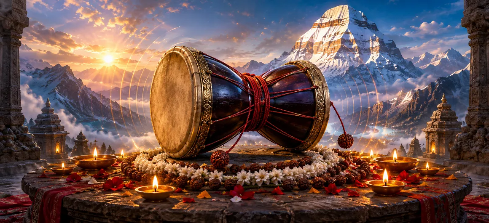

Damaru
ডমরু
The Damaru is the small hourglass-shaped drum carried by Lord Shiva. Though simple in appearance, it holds immense sacred meaning. Its beat is contemplated as primordial vibration—the awakening of sound, rhythm, movement and ordered creation from the stillness of the unmanifest.
In the iconic form of Nataraja, Shiva raises the Damaru in one hand while holding the fire of dissolution in another. Sound brings forth; fire transforms and returns. Between them flows the cosmic dance, reminding devotees that life moves through cycles and that change itself can belong to sacred order.
Six Sacred Dimensions of the Damaru
Primordial Sound
The first vibration symbolizes the emergence of expression and creation from profound silence.
Cosmic Rhythm
Its alternating beat evokes the pulse through which movement, time and life unfold.
Creation
In Nataraja's hand, the Damaru announces the creative beginning of the cosmic cycle.
Mantra
Sacred sound disciplines speech, gathers attention and turns the mind toward Mahadeva.
Cycles of Time
Beat and pause reflect arising and return, reminding us that no condition remains unchanged.
Sacred Silence
Every sound arises from silence and returns to it; both are essential to the complete rhythm.
Understanding Shiva's Sacred Damaru
The Hourglass Form
The Damaru is commonly formed from two widening ends joined at a narrow center. Cords with small beaters strike its surfaces when the drum is turned or shaken, producing a rapid alternating rhythm. Its compact form can be held aloft even during Shiva's cosmic dance.
Devotional interpretation may see the two sides as complementary realities held around a single center—sound and silence, creation and return, movement and stillness. Their apparent opposites become one instrument in Shiva's hand.
The Sound of Creation
In Nataraja symbolism, the sound of the Damaru is the primordial vibration of creation. Before distinct forms arise, there is the possibility of movement and expression. The first beat marks the passage from unmanifest stillness toward an ordered cosmos.
This does not reduce creation to ordinary noise. Sacred sound signifies meaningful vibration—the emergence of pattern, relationship and life. The universe is imagined not as lifeless machinery but as rhythm alive with Shiva's presence.
The Damaru of Nataraja
As Nataraja, Lord of the Dance, Shiva holds the Damaru in an upper hand and the flame of dissolution in another. The drum brings forth the rhythm of creation while fire signals transformation and return. Neither act stands alone; together they reveal the continuous cycle of cosmic becoming.
Nataraja's dance is dynamic yet perfectly balanced. The Damaru therefore belongs not to disorder but to divine rhythm—movement governed by an unshaken center.
Sound, Mantra and Sacred Speech
The Damaru invites reflection on the power of sound. Words can wound, heal, confuse or illuminate. Mantra disciplines this power by joining sound with attention, devotion and repeated sacred meaning. “Om Namah Shivaya” becomes not casual speech but a rhythmic offering of the mind.
Sacred speech also requires sacred listening. The pauses between words matter, just as silence between beats gives rhythm its shape. Wisdom grows when speaking and listening are held in balance.
Rhythm and the Cycles of Time
A drumbeat exists through repetition and change. Each beat appears, fades and makes space for the next. The Damaru thus offers a natural image of time, breath, seasons and the cycles through which worlds and individual lives unfold.
To recognize rhythm is to stop demanding that every moment remain the same. Shiva's drum teaches adaptability without loss of center: participate fully in change while remembering the still awareness beneath it.
The Inner Damaru
The rhythm of breath and heartbeat can become an inner reminder of the Damaru. When attention settles upon these natural movements, the devotee discovers that life is already pulsing without constant control. Gratitude replaces the illusion of complete independence.
Awakening the inner Damaru means bringing harmony to thought, speech and action. It also means knowing when to sound one's truth and when to return to silence.
What the Damaru Teaches the Devotee
Harmony
A meaningful life brings different energies into a balanced and purposeful rhythm.
Adaptability
Move with change while remaining rooted in a clear spiritual center.
Mindful Speech
Use sound and language to carry truth, kindness and clarity rather than harm.
Silence
Rest in the quiet source from which every thought, word and rhythm arises.
Acceptance of Cycles
Beginnings and endings are connected movements within a greater sacred rhythm.
Attentive Living
Listen for the deeper rhythm beneath haste, distraction and surface noise.
“May Shiva's Damaru bring harmony to our thoughts, truth to our speech and awareness of the sacred rhythm moving through all life.”
Frequently Asked Questions
What is Lord Shiva's Damaru?
The Damaru is a small hourglass-shaped hand drum closely associated with Lord Shiva. In sacred imagery, especially Nataraja, its vibration symbolizes primordial sound and the beginning of creation.
What does the sound of the Damaru represent?
The Damaru's sound is contemplated as cosmic vibration, creative rhythm, the pulse of time and the emergence of ordered expression from silence.
Why does Nataraja hold a Damaru?
In Nataraja imagery, Shiva holds the Damaru of creation while also bearing the fire of dissolution. Together they express the continuous cosmic cycle of arising, transformation and return.
What does the Damaru teach devotees?
The Damaru teaches harmony, mindful speech, adaptability, respect for life's rhythms and awareness of the silence from which sound arises and to which it returns.